Built on the Station branch station/youtube-layout-20260923 (from production de95670) and the Hub branch hub/youtube-count-20260923 (from production 4c1466c). Every picture below was taken by me from those candidates served locally on the MacBook, or from the live sites for the "before" shots. Nothing is pushed or deployed.
Alan: "Make the video as big as it can be given the altitude of the space, as wide as it can be, that it doesn't crop. Give whatever extra space to the Twitter."
What was on the wall before: the bottom row split exactly in half. A 16:9 picture is sized by the row's height, so inside a 960-px half-row at 1080p the picture could only be about 830 px wide and the other 130 px were black bars beside it, while X sat next to them at exactly half. Measured on the candidate at 1920×1080 (from the page, not estimated):
| before (live) | after (candidate) | |
|---|---|---|
| bottom row height | 488 px | 495 px |
| video pane width | 960 px (half) | 830 px — (495 − 28 px of the shell's one bar) × 16 ⁄ 9 |
| picture when playing | 830 × 467, black bars either side | 830 × 467, no bars — the same picture, the box now fits it |
| X pane width | 960 px | 1,089 px |
The lock is a plain rule: the video pane on the wall gets flex:0 0 auto and a width computed from its own height and the chrome height the shell reports; X stays a plain flex sibling and takes every remaining pixel. Clamped to 30–60 % of the row so a very tall or very wide wall never starves either pane. It stands down for phone stacking, the two media expansions (⤢ across the region, cover X) and a bottom-row solo, which keep their own geometry unchanged. Nothing crops: YouTube letterboxes inside the frame, and the thumbnail grid counts its columns from the narrower width.
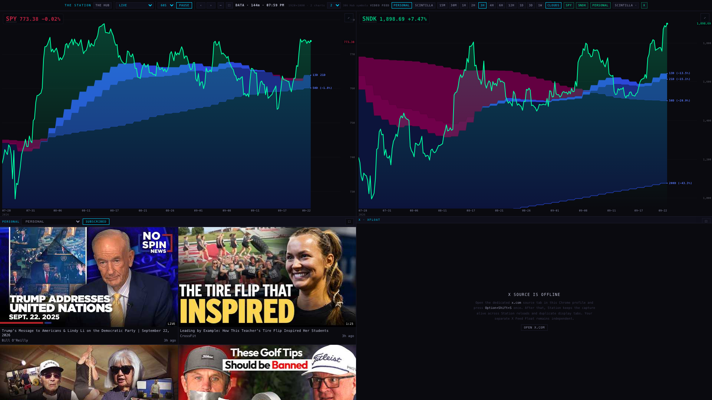
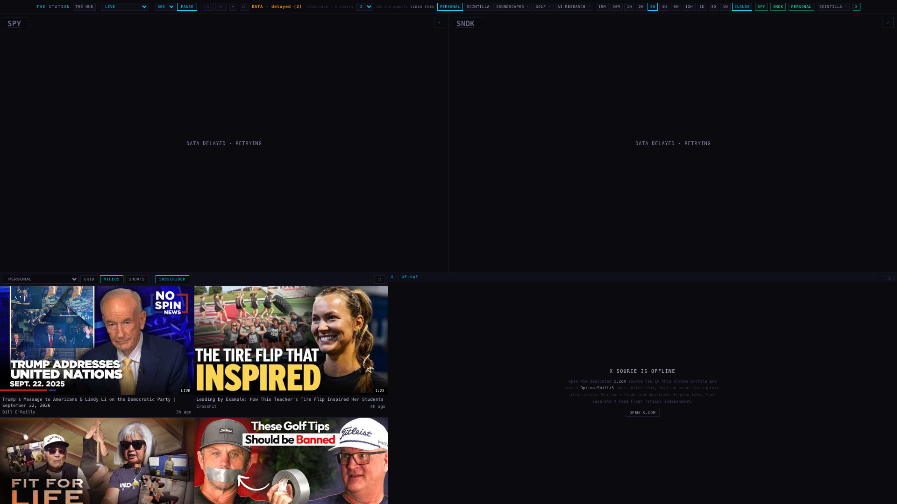
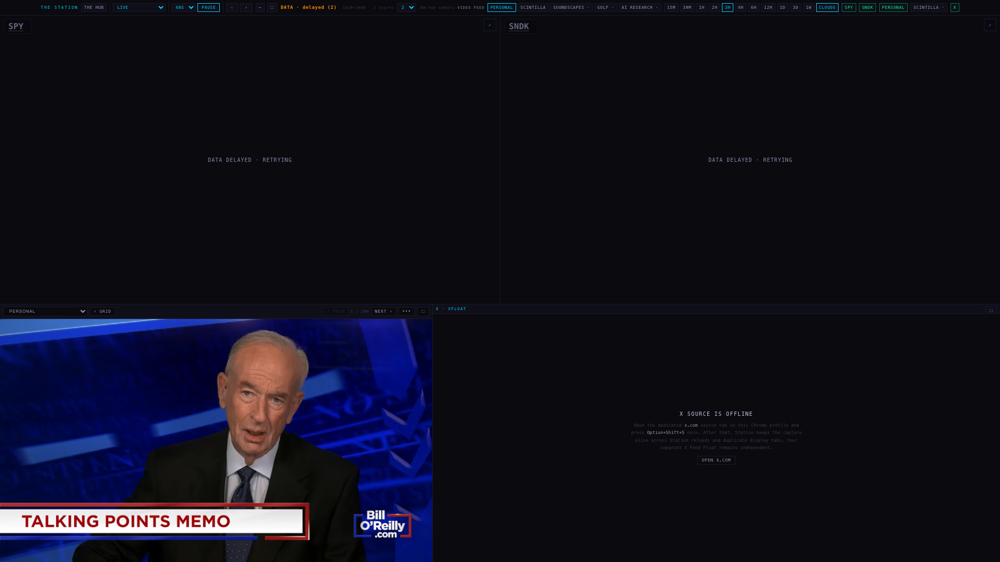
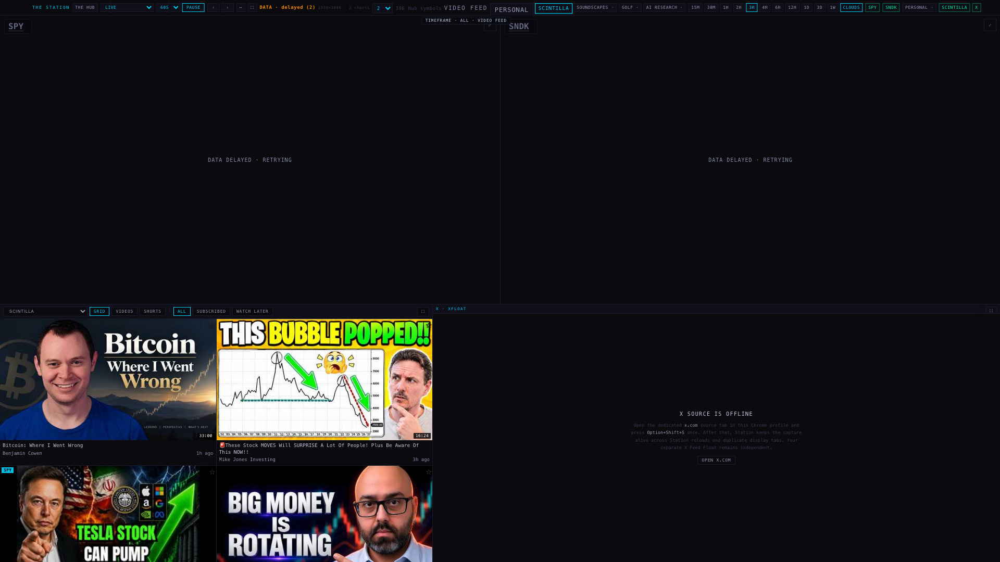
The two charts read "data delayed · retrying" in the candidate shots because the chart shell was served from localhost during capture; the chart shell is not changed by this branch (see the file list), and the live "before" shot shows them drawn.
How PERSONAL and SCINTILLA are selected today (read from source). Each is a YouTube identity. The collector yt-rss-sweep holds ACCOUNTS = ["personal","scintilla"]; for each account it refreshes an OAuth token from app_config (YT_REFRESH_TOKEN_<ACCOUNT>), reads that identity's subscriptions?mine=true hourly into yt_sub_channels_<account>, polls each channel's free RSS, and tags every video row subscription_accounts ⊇ {account}. SCINTILLA's list can also grow project-side: a Subscribe from the pane appends to yt_sub_channels_scintilla through yt-act, no Google login needed. The Station pane is a view over that column (subscription_accounts=cs.{account}), the video shell's FEED_PROFILES registry names the profiles, and the deck's VIDEO_FEEDS decides which pane is on the wall.
What was added. One account key per channel, the same key everywhere: soundscapes, golf, ai_research, fitness. The deck's switch offers PERSONAL · SCINTILLA · SOUNDSCAPES · GOLF · AI RESEARCH always, marks a channel " ·" while no video row carries its account yet (the button's tooltip says so), and shows FITNESS only once a row carries fitness — Alan is still thinking about that one. The pane for an awaiting channel says what it is waiting for instead of "no videos". The pane's own profile select lists all six and, inside the deck, asks the deck to swap panes instead of reloading itself (which used to leave the switch pointing at the wrong pane).
What each channel needs before it fills (nothing is tagged for any of them yet; measured on the live feed 2026-09-23: personal 112, scintilla 137, unscoped 750 of the first 1,000 rows, none of the four).
| step | who | what |
|---|---|---|
| 1 | root | deploy the three collector functions from this branch (yt-oauth, yt-rss-sweep, yt-act) — their ACCOUNTS lists now carry the six keys. Not done here: the brief forbids deploys. |
| 2a | Alan, per channel | either connect the channel's own Google identity through the existing device-code flow, yt-oauth?account=golf — that stores its refresh token, channel id and title, and the sweep caches its subscriptions within the hour; |
| 2b | Alan, per channel | or subscribe channels to the feed project-side (the pane's Subscribe while a video plays on that feed → yt-act {action:"sub", account:"golf", channelId} → yt_sub_channels_golf), exactly as SCINTILLA does. No Google login. |
| 3 | the sweep | polls those channels' RSS and tags youtube_videos.subscription_accounts with the key; the youtube_feed view already passes that column through (verified). |
| 4 | the Station | the pane's SUBSCRIBED list fills, the deck marks the feed present, FITNESS's button appears the moment its first row lands. No further code change. |
Deploy order matters, and the pane guards it. Through the currently deployed yt-act, a Subscribe sent with an unknown account falls through to the PERSONAL identity and would create a real personal YouTube subscription. So on a channel feed the Subscribe button is disabled and says "after the collector update" until CHANNEL_FEED_SUBSCRIBE_READY in the shell is flipped to true — one line, in the same change that deploys the functions.
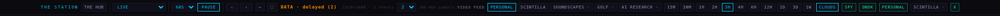
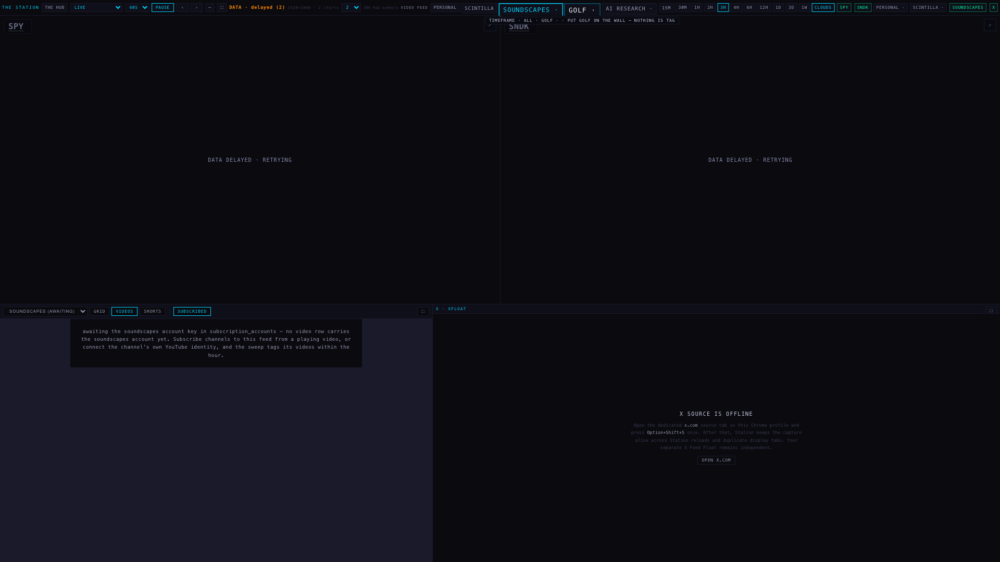
Alan: "a lot of very short shorts contaminate the grid. A combined grid, one of only shorts, one of only videos." · "The thumbnail duration is good to have."
Three tabs, first on every pane's rail, applied to whichever list is open. A short is either thing: the platform's own flag (is_short, from the sweep's probe of youtube.com/shorts/) or a length of 60 seconds or less. Measured on the live feed: 3,859 rows are flagged, 183 sub-minute videos are not flagged, and 1,283 flagged Shorts run over a minute — neither rule alone matches what Alan sees as a short. The database is asked the same question the page asks (the feed serves length as m:ss with no leading zero, so 0:* is every sub-minute length and 1:00 the boundary), and every row that lands is re-checked, including the id-based Watch Later list. The duration badge stays on every thumbnail. Each feed opens on what it showed before the tabs existed (PERSONAL on its videos, SCINTILLA and market search on everything) and remembers the tab per feed on the device.
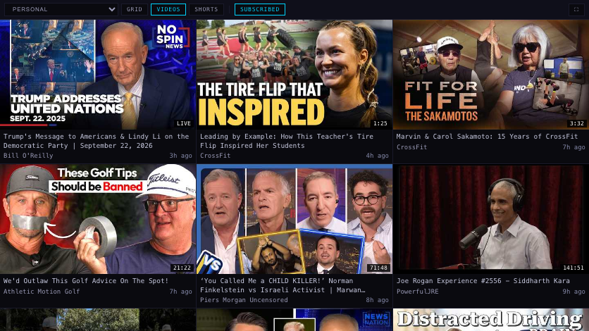
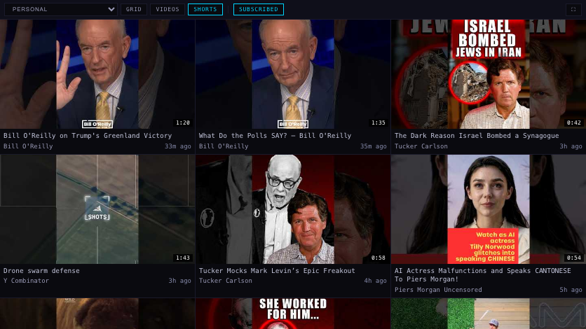
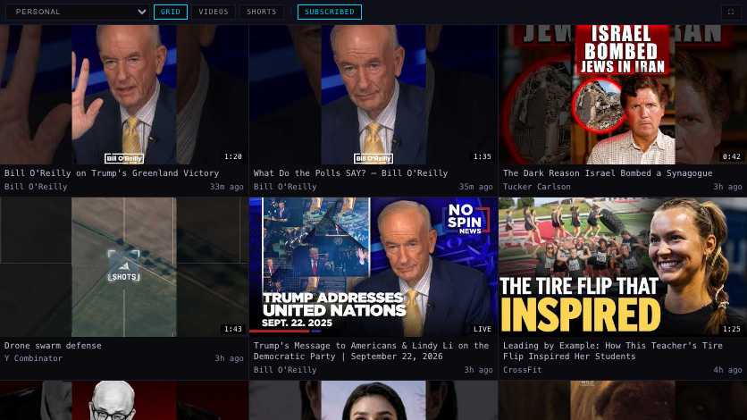
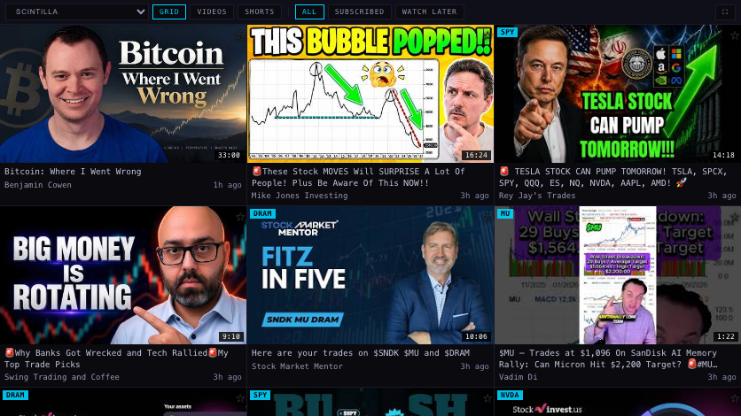
Alan: "Is the video count clickable?" On SOCIAL › SENTIMENT the count on a YouTube row ("2 videos") is now underlined and opens, under its own row, the list of the videos the job counted: title (a link), channel, age and lean. A second click closes it; clicking the count never opens the company row beneath it; other sources keep their plain count.
What it shows tonight, honestly. The count comes from social_sentiment (63 YouTube rows). The videos themselves live in youtube_video_sentiment, joined to youtube_videos — and that table holds 0 rows on the live database (the sentiment job's write paths were refused by the permission gate in the earlier run). So the panel says exactly that, names the table, and still offers the latest mention the row carries, as a link. When the job's rows land, the same click shows the list with no code change. It never substitutes a title search for the job's own list.
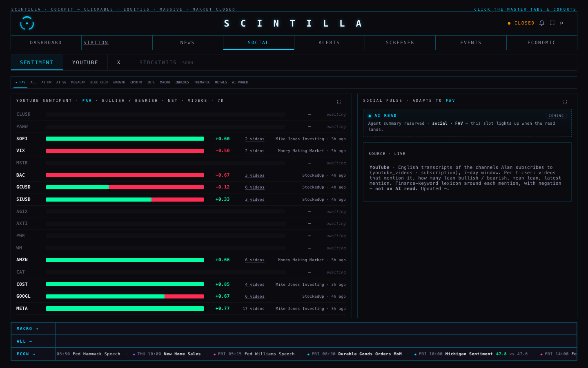
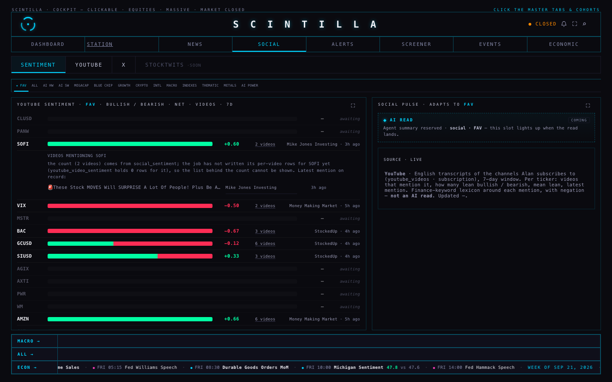
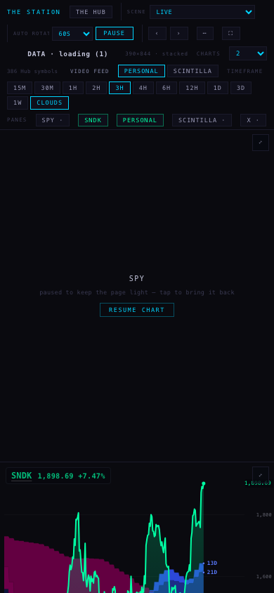
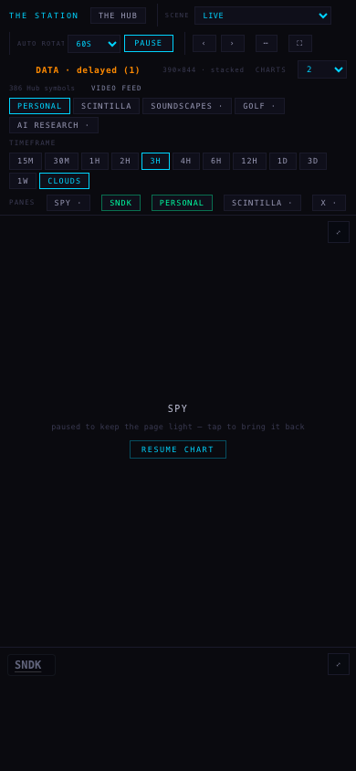
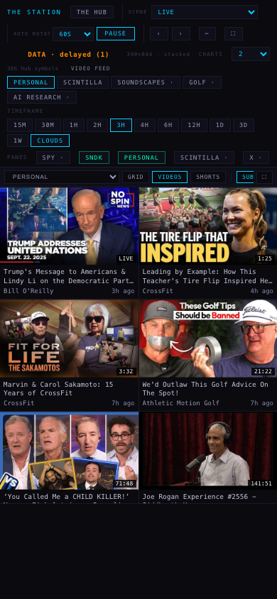
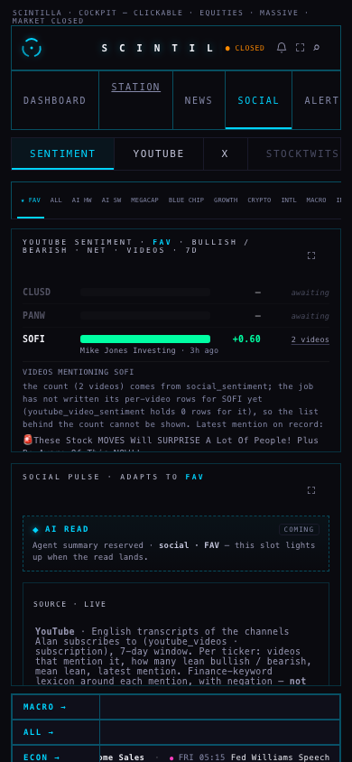
| surface | before (production) | after (candidate) | kept? |
|---|---|---|---|
| deck · VIDEO FEED switch | PERSONAL · SCINTILLA | PERSONAL · SCINTILLA · SOUNDSCAPES · · GOLF · · AI RESEARCH · (+ FITNESS when rows carry it) | kept, extended |
| deck · one video at a time (off-wall pane unmounted, stops playing) | yes | yes, for every feed | unchanged |
| deck · remembered feed per device | fb / fa | any registry key, checked against the registry | kept |
| deck · pane chips row | SPY · SNDK · PERSONAL · SCINTILLA · · X | same; a channel's chip appears once it has rows or is on the wall | unchanged today |
| deck · bottom row split | video ½ · X ½ | video = height × 16⁄9 · X the rest | changed as asked |
| deck · ⤢ expand across the region / cover X / row solo / PiP / phone stack | yes | yes, untouched (the lock stands down for them) | unchanged |
| pane · feed label + profile select | "PERSONAL [PERSONAL ▾]" | "[PERSONAL ▾]" — the label hid because it repeated the select's word | kept (one copy) |
| pane · profile select inside the deck | reloaded the pane on the chosen feed (the deck's switch then pointed at the wrong pane) | asks the deck to swap panes | fixed |
| pane · PERSONAL rail | SUBSCRIBED | GRID · VIDEOS · SHORTS | SUBSCRIBED (opens on VIDEOS = what it showed) | kept, extended |
| pane · SCINTILLA rail | GRID · SUBSCRIBED · SHORTS · WATCH LATER | GRID · VIDEOS · SHORTS | ALL · SUBSCRIBED · WATCH LATER ("grid" list renamed ALL; "shorts" list became the SHORTS tab) | kept (moved, renamed) |
| pane · MARKET SEARCH rail | MARKET · SHORTS · ALL MARKET | GRID · VIDEOS · SHORTS | MARKET (ALL MARKET = MARKET + GRID; ?list=all and ?list=shorts still land) | kept (moved) |
| pane · duration badge on the thumbnail · age on the channel line | yes | yes | unchanged |
| pane · ★ watch later (SCINTILLA) · prev/next · ••• menu (watch later, subscribe, open in YouTube, picture in picture, expand, cover X) · resume positions · endless paging · 2-minute refresh | yes | yes; Subscribe on a channel feed is disabled until the collectors are deployed (see §2) | unchanged |
| pane · empty state | "no videos in this list" | says which: nothing in this tab, or the channel is awaiting its account (with what to do) | improved |
| Hub · SENTIMENT count | plain "2 videos" | underlined, opens the list / the honest state; row click still opens the company | kept, extended |
| Hub · latest mention cell (channel · age) | yes | yes | unchanged |
station/youtube-layout-20260923, from de95670): deck/index.html; station-shells/personal-video-v1/index.html and station-shells/scintilla-video-v1/index.html (byte-identical, asserted by test); supabase/functions/yt-oauth, yt-rss-sweep, yt-act (six accounts; channel-feed subscribe); tests: new tests/station-video-layout.test.mjs, tests/station-video-profiles.test.mjs repointed from a file that is not in the tree to the two shells, sandbox stubs and three literal-matching assertions reconciled in station-h3-h4-backlog and station-scenes. No chart, X, iPad or routing change.hub/youtube-count-20260923, from 4c1466c): index.html only (+95 lines), new tests/hub-social-videos.test.mjs; the age test's call-site count updated (it already failed on production, where root's latest-mention cell made a fifth site).de95670 before any change (route inventory, dock inventory, chart badge, the age-colour tests that a later merged commit contradicts, and others; list in RESULT.json), none new. Hub: 13 tests, 13 pass, 0 fail.node --check). The three Deno functions could not be type-checked here (no Deno on this Mac); their edits are the account list, the config keys derived from it, and one additive branch..btn and chip classes, the new text uses the existing mid greys, and a test in each repo scans the added CSS for #fff, #F2F2F8, #C6C8DE and rgb(255….CHANNEL_FEED_SUBSCRIBE_READY in both video shells (one line, keep them identical).youtube_video_sentiment is empty), or the count's list stays the honest sentence.